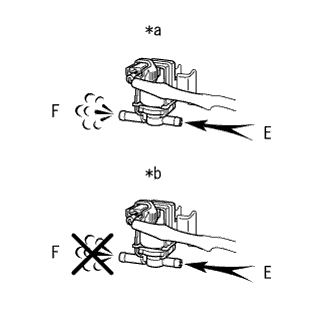
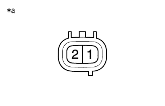
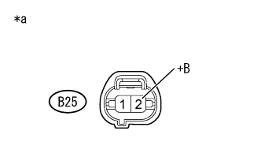

DTC P0443/94 エバポパージ制御D-VSV断線 |
| DTC No. SAE/TCCS | DTC検出条件
| 点検部位 |
|---|---|---|
| P0443/94 |
|
|
参照)| 手順1 | TaSCANアクティブテスト実施（パージVSV） |
SST(TaSCAN)をDLC3に接続する。
IG ONにする。
SST(TaSCAN)の画面表示に従って、[アクティブテスト] - [パージVSV]を選択する。
| 項目 | 内容 | 制約条件 |
|---|---|---|
| パージVSV | パージ制御VSVの通電/非通電(通電時デューティ比 30 %) | IG ON |
デュティバキュームスイッチングバルブのバキュームホース2本を切り離す。
|  |
デュティバキュームスイッチングバルブを作動させ、通気があるかを確認する。
| アクティブテスト (パージVSV) | 基準 |
|---|---|
| ON | EポートからFポートへ通気あり |
| OFF | EポートからFポートへ通気なし |
| *a | VSV ON |
| *b | VSV OFF |
| 結果 | 飛び先 |
|---|---|
| 異常 | A |
| 正常 | B |
|
| ||||
| A | |
| 手順2 | デュティバキュームスイッチング バルブ単体点検 |
|  |
デュティバキュームスイッチングバルブのコネクターB25を切り離す。
SST(トヨタエレクトリカルテスター)を使用して、端子間の抵抗を測定する。
| 点検端子 | 点検条件 | 基準値 |
|---|---|---|
| 1 - 2 | 20°C | 27 to 33 Ω |
| *a | コネクター非接続状態 (デュティバキュームスイッチングバルブ) |
|
| ||||
| OK | |
| 手順3 | ワイヤハーネスおよびコネクター点検（デュティバキュームスイッチングバルブ電源電圧） |
参照。|  |
デュティバキュームスイッチングバルブのコネクターB25を切り離す。
IG ONにする。
SST(トヨタエレクトリカルテスター)を使用して、端子間の電圧を測定する。
| 点検端子 | 点検条件 | 基準値 |
|---|---|---|
| B25-2 (+B) - ボデーアース | IG ON | 11 to 14 V |
| *a | 車両ワイヤハーネスコネクター前側 (デュティバキュームスイッチングバルブ接続コネクター) |
|
| ||||
| OK | |
| 手順4 | ワイヤハーネスおよびコネクター点検（デュティバキュームスイッチングバルブ - エンジンコントロールコンピュータ） |
参照。デュティバキュームスイッチングバルブのコネクターB25を切り離す。
エンジンコントロールコンピュータのコネクターB36を切り離す。
SST(トヨタエレクトリカルテスター)を使用して、端子間の抵抗を測定する。(端子配列は参照)
| 点検端子 | 点検条件 | 基準値 |
|---|---|---|
| B25-1 (EVP1) - B36-12 (PRG) | 常時 | 1 Ω未満 |
| 点検端子 | 点検条件 | 基準値 |
|---|---|---|
| B25-1 (EVP1)およびB36-12 (PRG) - 他の端子間およびボデーアース間 | 常時 | 10 kΩ以上 |
|
| ||||
| OK | |
| 手順5 | ダイアグコード消去 |
SST(TaSCAN)をDLC3に接続する。
IG ONにする。
SST(TaSCAN)の画面表示に従ってダイアグコードを消去する。(要領は参照)
| 次へ | |
| 手順6 | 作動確認運転実施 |
IG OFFにして30秒間待つ。
SST(TaSCAN)をDLC3に接続する。
エンジンを始動し、すべてのアクセサリスイッチをOFFにして、エンジン冷却水温が安定するまで暖機する。（エンジン水温が75°C 以上） (A)
15分以上アイドリングする。(B)
SST(TaSCAN)の画面表示に従って、メインメニュー[診断] - 診断メニュー[パワトレ] - [TCCS] - システム診断メニュー[ダイアグ判定結果確認] - [ダイアグコード別確認]を選択する。
次画面にて、確認を行うダイアグコードを入力する。
ダイアグコード判定結果を確認する。
| 結果 | 飛び先 |
|---|---|
| 異常 | A |
| 正常 | B |
| 表示項目 | 内容 |
|---|---|
| 正常 |
|
| 異常 |
|
| 判定中 |
|
| 判定不可 |
|
|
| ||||
| A | ||
| ||
| 手順7 | ワイヤハーネスおよびコネクター点検（EFI MAINリレー - デュティバキュームスイッチングバルブ） |
参照。エンジンルームリレーブロックからEFI MAINリレーを取りはずす。
デュティバキュームスイッチングバルブのコネクターB25を切り離す。
SST(トヨタエレクトリカルテスター)を使用して、端子間の抵抗を測定する。
| 点検端子 | 点検条件 | 基準値 |
|---|---|---|
| EFI MAINリレーホルダの3端子 - B25-2 (+B) | 常時 | 1 Ω未満 |
| 点検端子 | 点検条件 | 基準値 |
|---|---|---|
| EFI リレーホルダの3端子およびB25-2 (+B) - 他の端子間およびボデーアース間 | 常時 | 10 kΩ以上 |
|
| ||||
| OK | ||
| ||